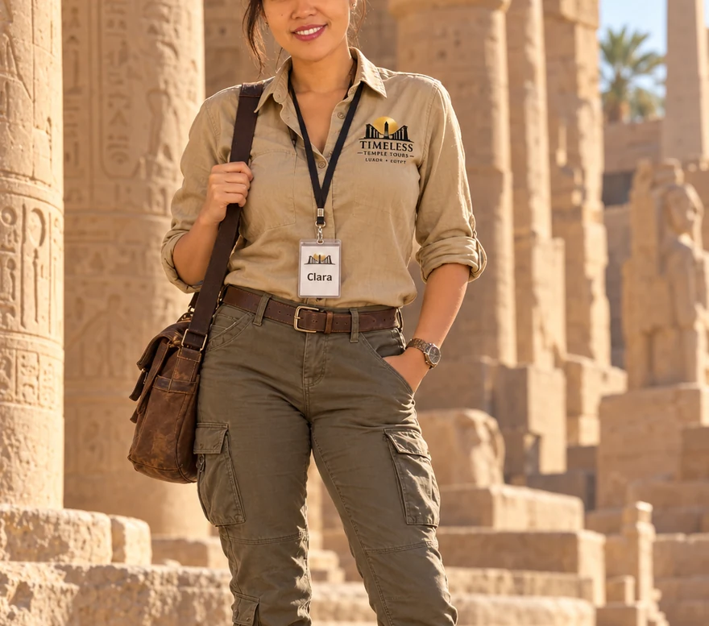

Temples & historyKarnak & the Temples of Thebes
Walk beneath monumental columns, past ram-headed sphinxes, and into the heart of ancient Egypt.
Experience highlights
- Karnak's monumental hypostyle hall
- Obelisks and sacred lake
- The stories behind the carved stone